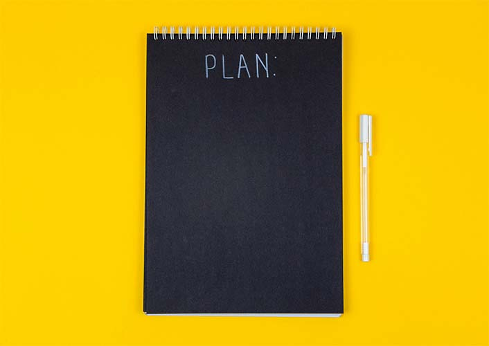

You start with thinking which of the three projects you've been working on in the last few months is in its earliest stage, thus requires the most attention and work.
You think of the next steps that you need to take with that project: either to search for some academic research already done and published on that topic or film or piece of media that your own research is engaged with, or if a sufficient amount of research is already gathered, which section of the paper is lacking the most content, that is, the meat of your own argument.
While it seems like a pretty straight-forward approach and shouldn't take too much of your time, you catch yourself not being able to focus, because you've had a long day working on those projects and your head is going in circles trying to grapple with the amount of work you still need to do and the ostensible lack of time to accomplish what you've set out to do with all three of the projects.
The anxiety from the internal pressures is growing and what appeared to you beforehand like an anxiety-releaving plan has turned out to be an anxiety-enducing use of your time.
So as you're struggling to write the plan for tomorrow, you are thinking of how to proceed after having had this inner dilemma resurface again: